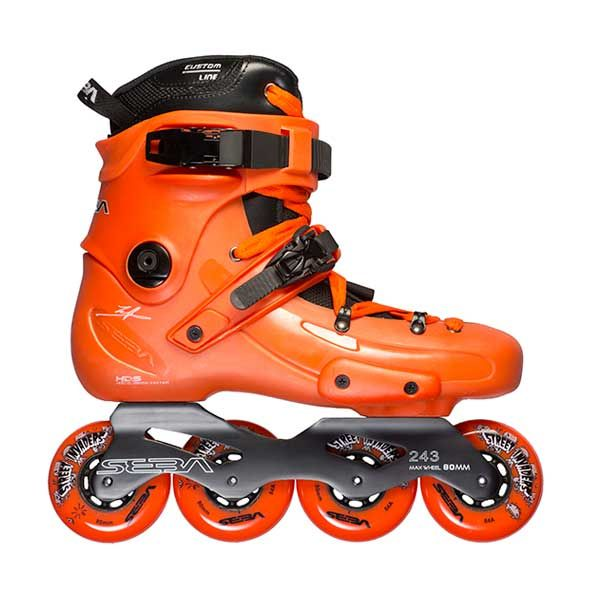

Brands
Powerslide kaze

Urban adventures on 3 wheels: The Powerslide Kaze Supercruiser 110 urban inline skate. The super low Trinity mounting enables you to roll on 3 big wheels without losing control or balance. The reinforced shell & the stiff 243mm Triskate frame provide plenty of support for all freestyle tricks. Once having tried the comfy Recall Fit padding, there is no going back. Long lasting 110mm UC wheels & fast Wicked bearings crown this stunning commuter freeskate!
Rollerblade Twister Edge X

Twister Edge X changes the game with a new design, fit and level of versatility to continue its reign as the benchmark skate in the industry. The boot and liner work together to create a superior anatomical fit and additional comfort with its memory latex padding. The sole features an Anti-Torsion Box to increase the control and stiffness for better handling and performance. Hydrogen wheels, made in the USA, are made of the highest quality urethane for optimal roll, wear and grip. Our team riders wanted the ultimate skate with lateral support, ventilation, durability, shock absorption and performance features so they helped us create this skate so you can too. Twister Edge X is one of the most compelling combinations of fit, support and maneuverability. The brake comes in the box.
Seba FR 1
World’s favorite Freeride skate perfected. The shell is 310 & 325 frame-compatible, and available in yellow. Feel the remarkable difference in fit and in action. The New FR Liner, Premium Insole, and New 4D frame make this skate a game changer.